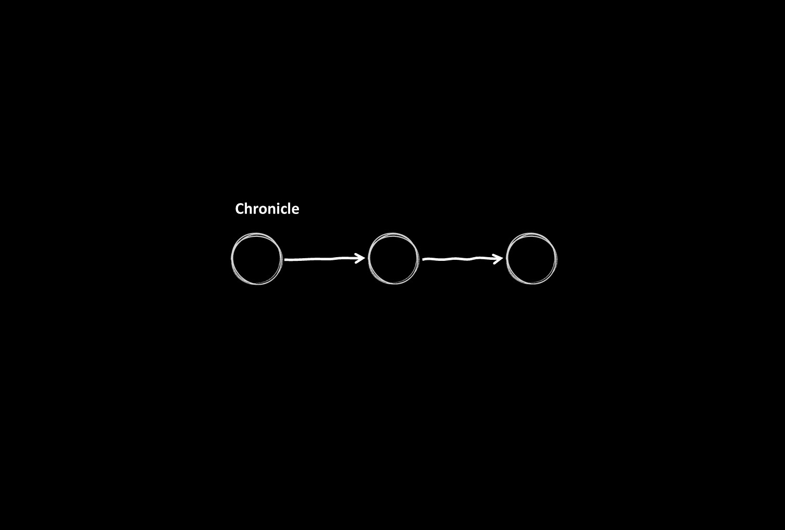
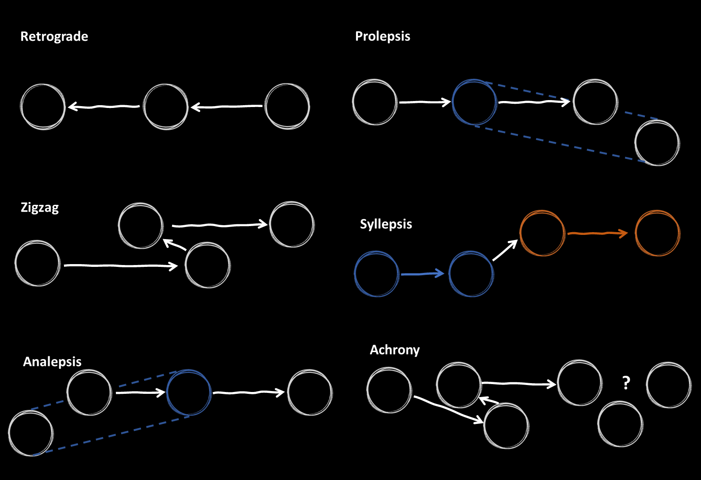
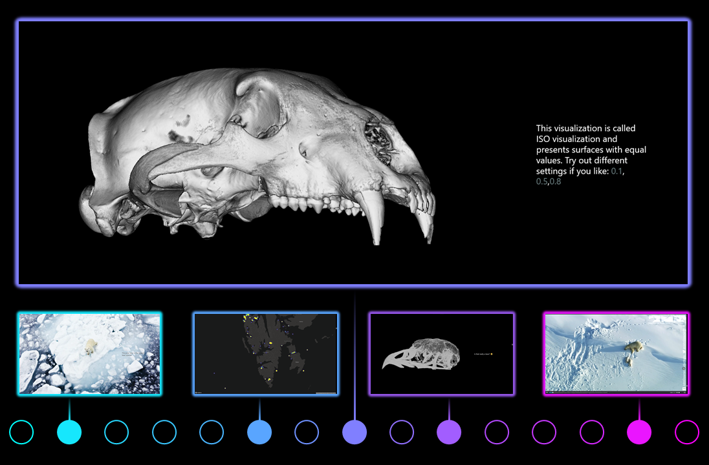
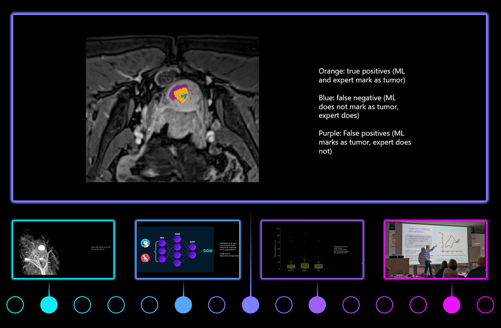
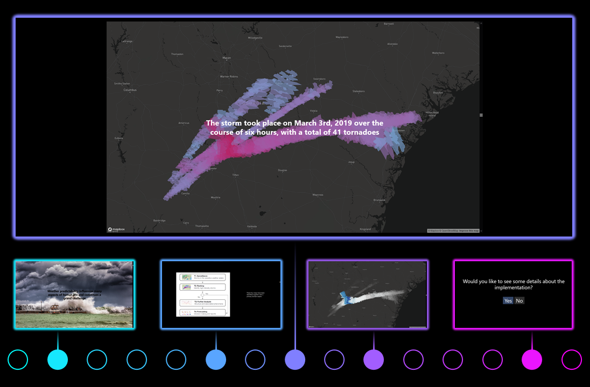
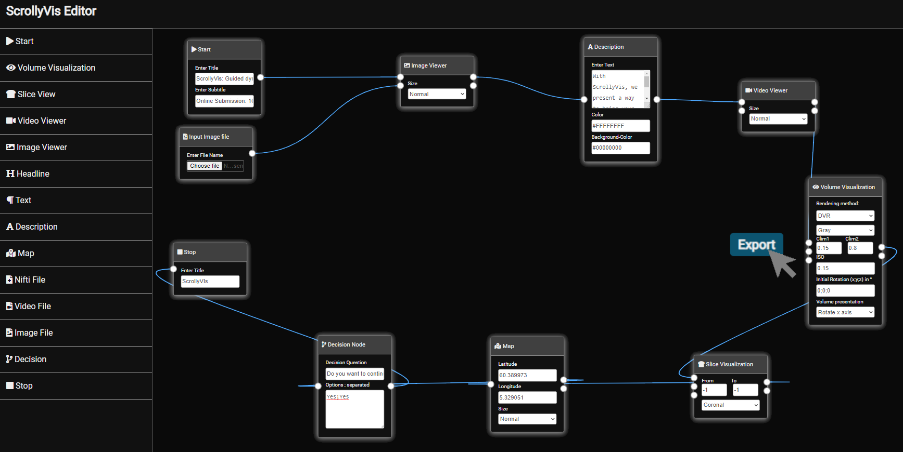
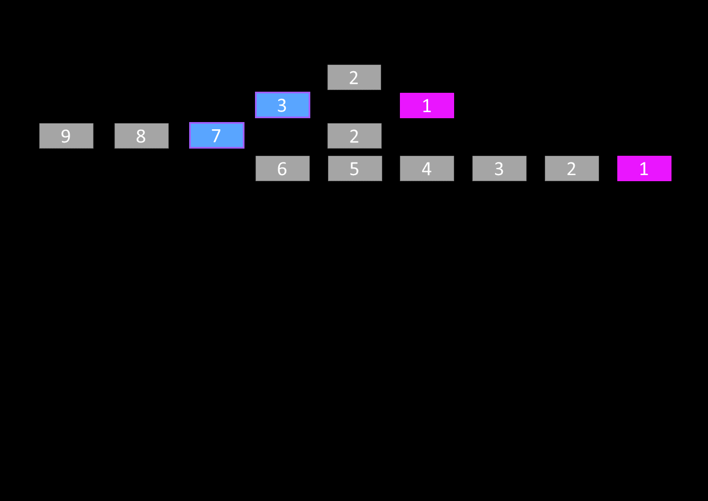
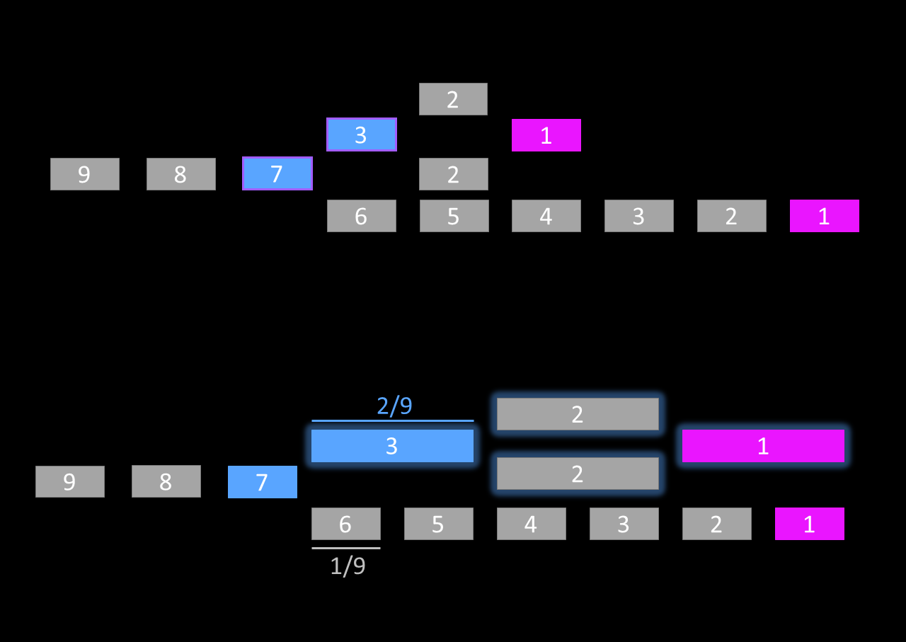
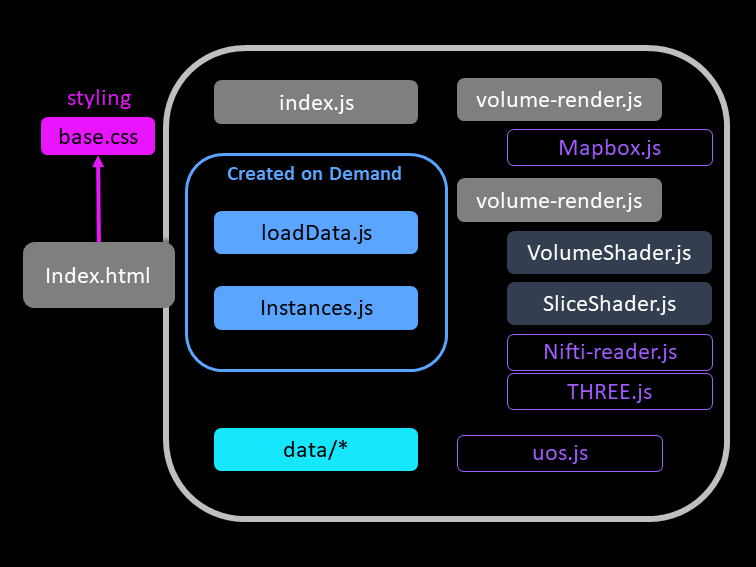

ScrollyVis: Guided dynamic narratives for scientific storytelling
Online Submission: 1061
done

With ScrollyVis, we present a way to bring your story idea to life.
Authors are now able to tell guided dynamic narratives as scrollytelling websites by simply using our editor.
The resulting websites are ready for deployment on any webserve.

ScrollyVis supports linear narratives ...

... as well as non-linear narratives.

Our editor furthermore allows authors to create guided interactive narratives.
Such narratives are especially important to increase viewer engagement.
Now we show you some case studies created with our editor
Choose which case study you would like to explore



Together with the curator of the modern osteological collection at the University Museum of Bergen we created a story focused on outreach activities
This story focuses on presenting results of a publication on automated segmentation of endometrail cancer imaging data in magnetic resonance using deep learning
This story is about an visual analytics tool for the detection of hazardous thunderstorms and their characterization. The accepted paper about the tool is called Hornero and will appear shortly.
Now we will present you some details about our approach!
If you would like to check another case study, just scroll back up 😉
The story primarily focuses on polar bears living in Norway.
Next we show the story in video format.
Next we show the story in video format.
The authors introduces an automatic approach to create the segmentation mask.
Next we show the story in video format.
Next we show the story in video format.
In this story we are including custom code presenting the reults of Hornero.
Next we show the story in video format.
Next we show the story in video format.
There are as many stories to tell as stars in the sky!
.png)



We introduce a story segment balancer to ensure a consistent story length

Story segments of shorter branches are adapted on demand.
Various content is presentable

Our editor exports ready to deploy websites, including everything needed in one zip file!
We hope you are now as excited as we are!
Check out our paper ScrollyVis!
The three case studies are also available online at:
https://ericmoerthuib.github.io/ScrollyVis/